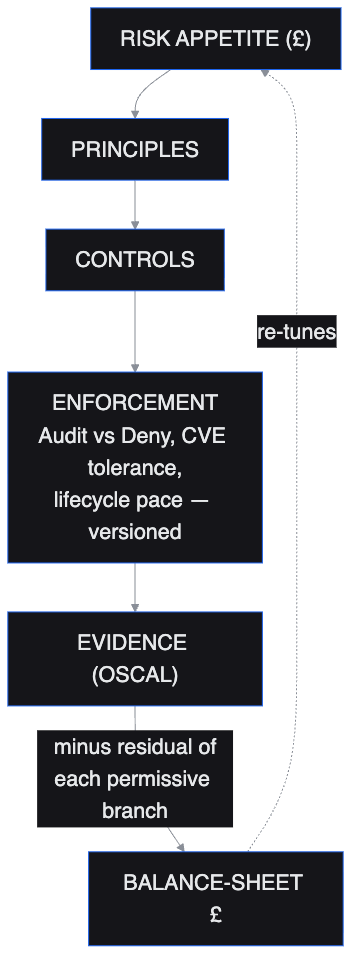
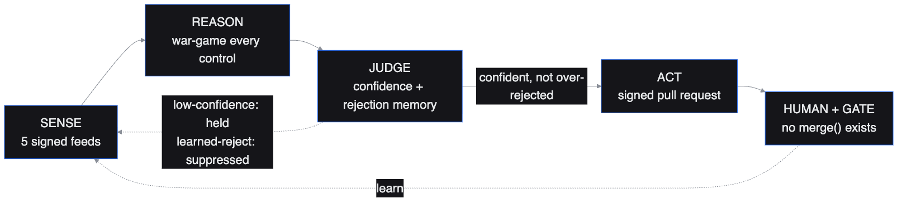
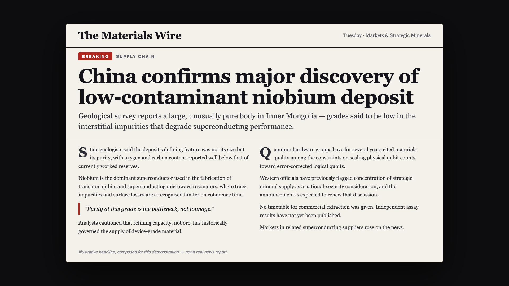
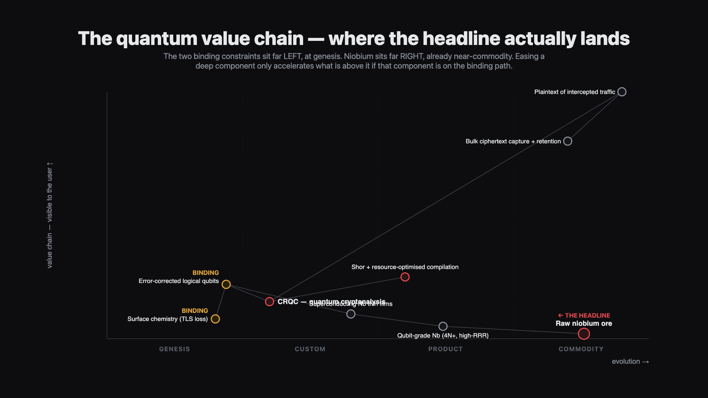
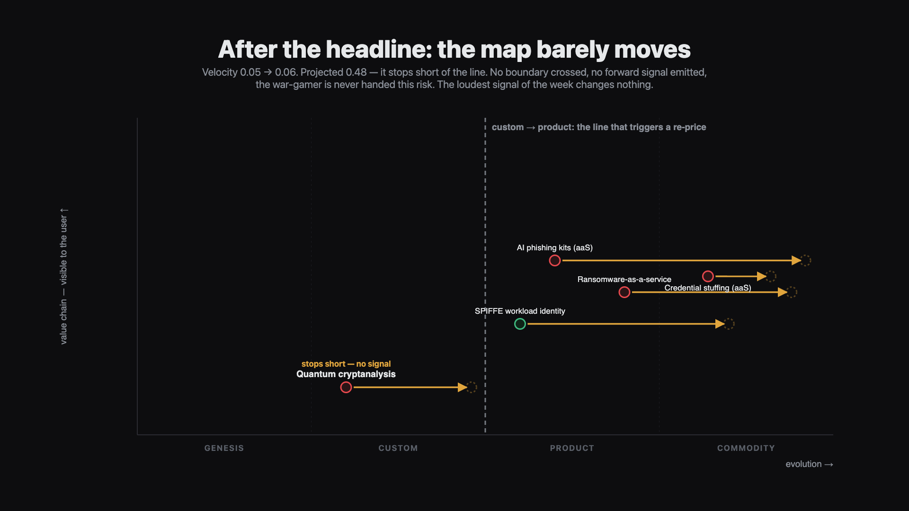
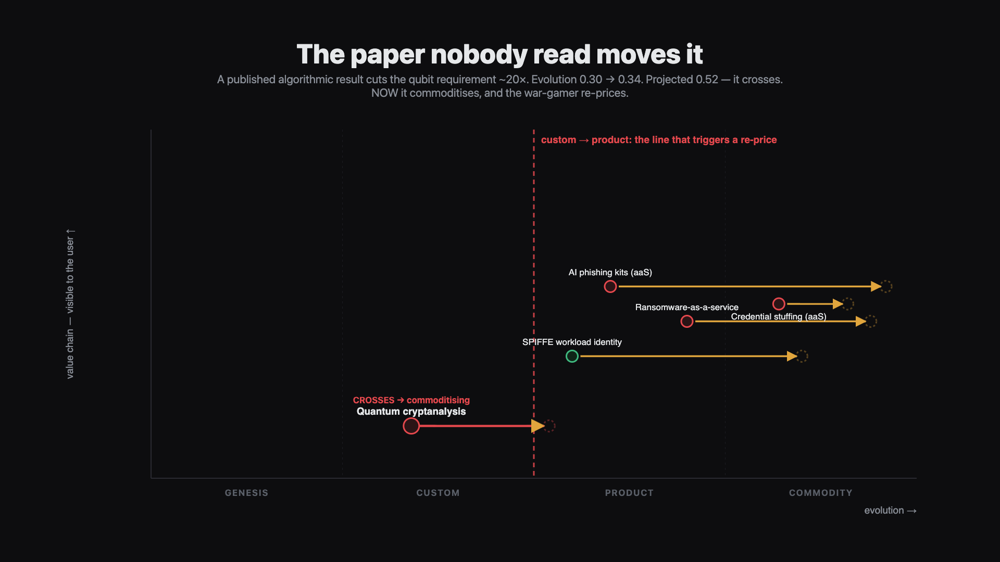
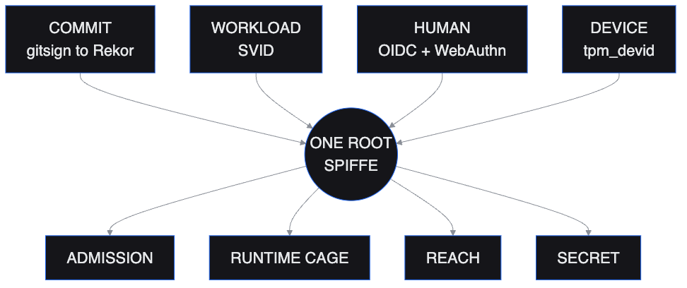

| institution | tolerance | risk bought | verdict |
|---|---|---|---|
| driftwood | £40,000 | £21,107 | AUDIT |
| ludlow | £5,000 | £21,107 | DENY |
| tuppence | £15,000 | £21,107 | DENY |





| move | before the crossing | after the crossing |
|---|---|---|
| transfer (currently deployed) | £1,017,450 | £1,701,257 |
| cage | £39,933 | INFINITE — no tier fits the band |
| fix | £212,338 | £212,338 — unchanged, now cheapest |
| deny | £312,338 | £312,338 |
